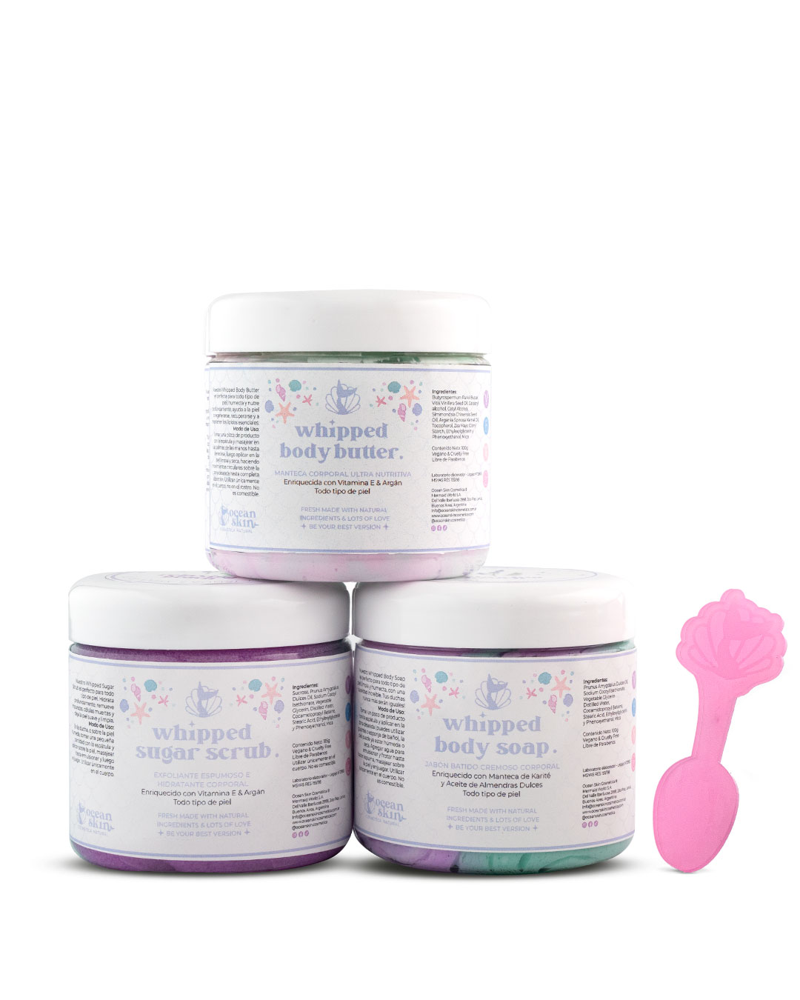
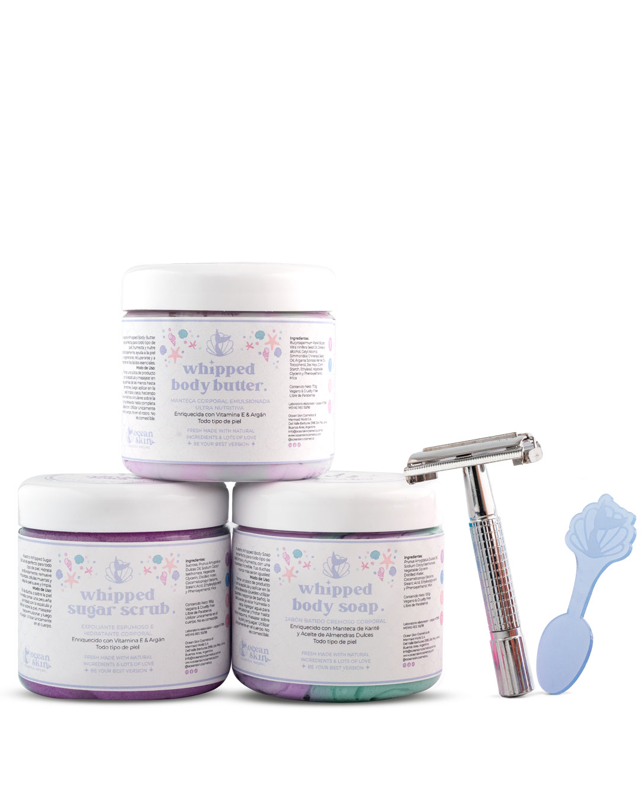
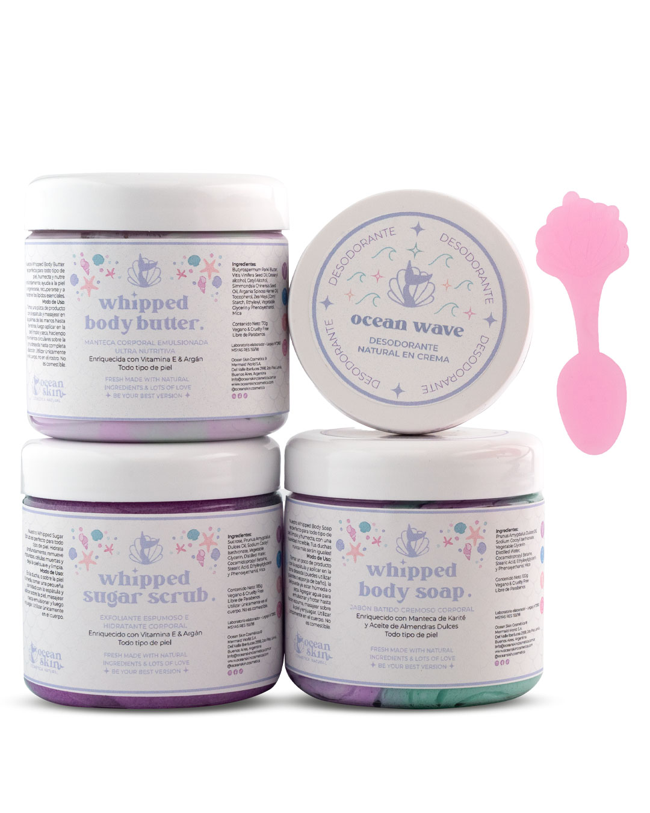
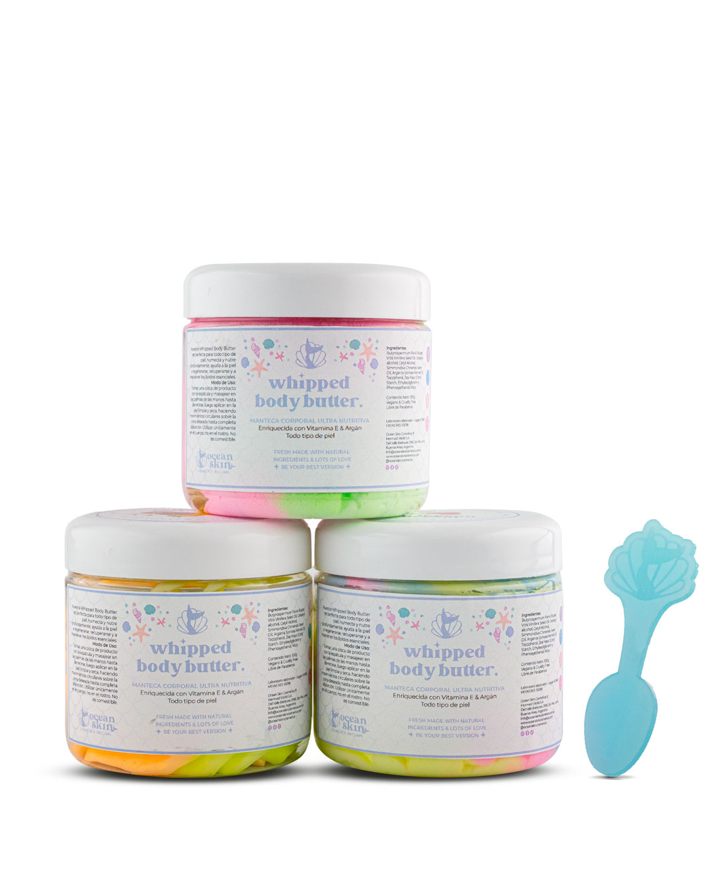
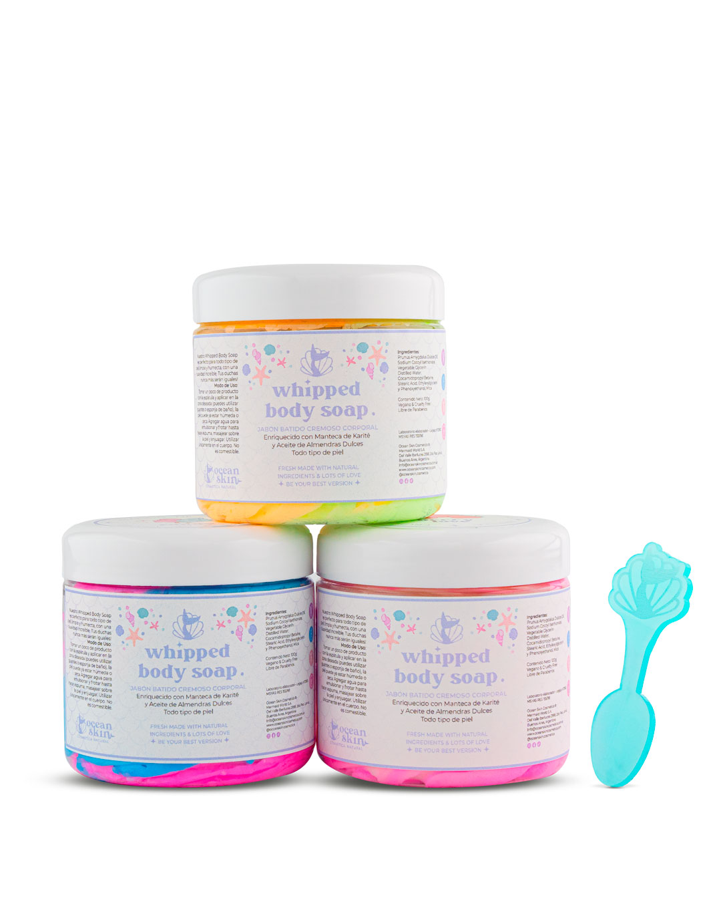
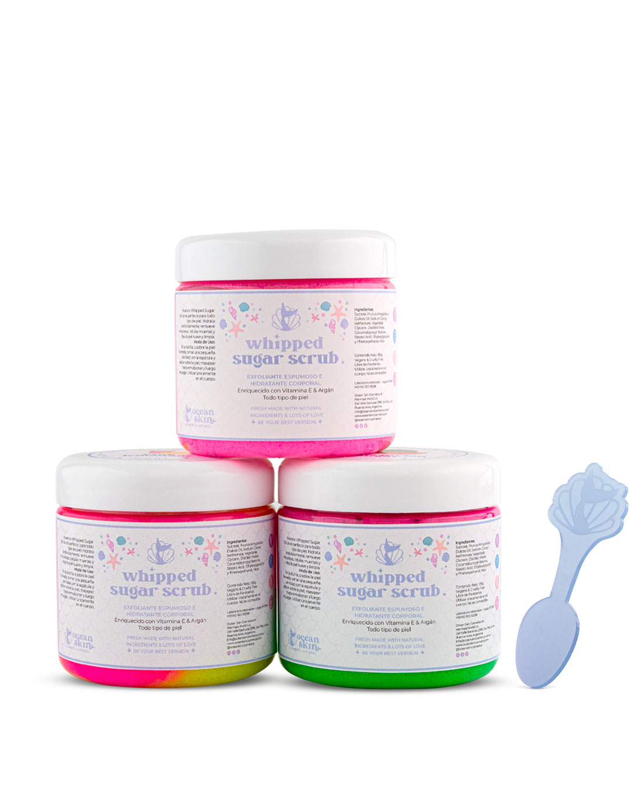
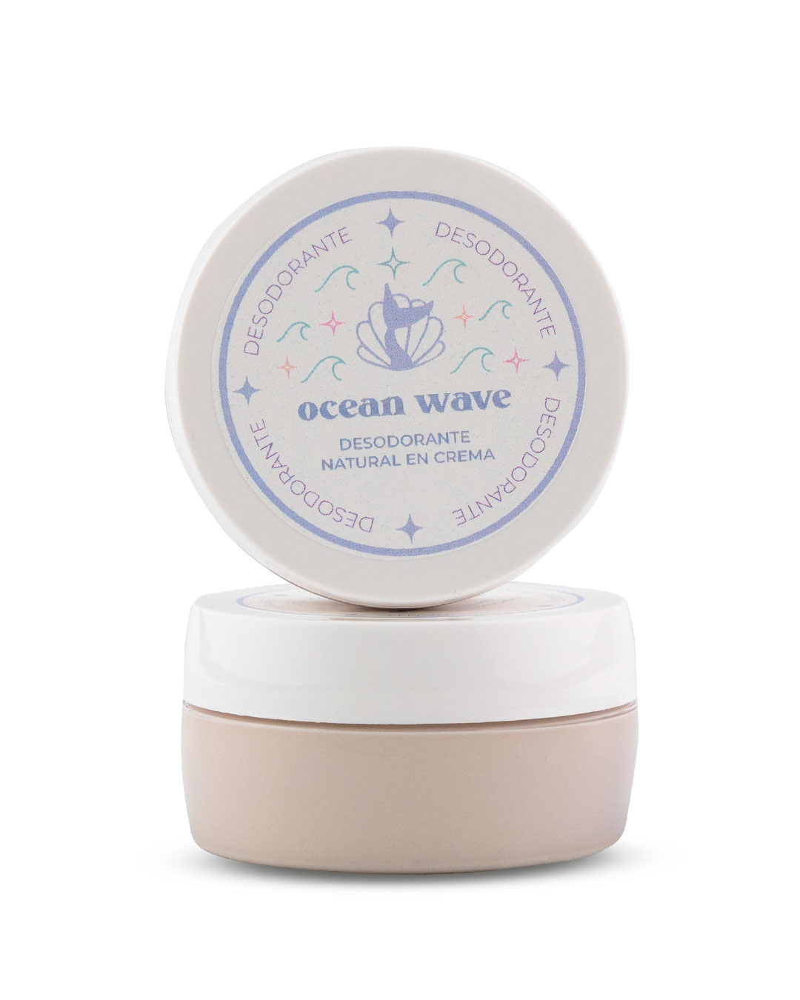

Nuestros productos
Árbol de té
Kit piel de sirena: Lavanda y árbol de té
Nuestra Rutina Estrella para Combatir la foliculítis, Acné corporal, Queratosis y más! Con los 3 productos de Lavanda y Árbol de Té, posee propiedades antiinflamatorias, antisépticas y bactericidas, la principal cura para las infecciones sebáceas que se producen en los brotes de acné, foliculítis, dermatitis, psoriasis, granitos, piel de frutilla y queratosis. Calma, humecta en profundidad ya que en los 3 pasos estamos humectando y nutriendo la piel del cuerpo, lo que, con el uso regular revela una piel saludable, sedosa y sobre todo con un brillo espectacular. Llevando la Rutina Piel de Sirena completa, ahorrás, y además te llega un Accesorio de Regalo para el Cabello.
Kit piel de sirena: Lavanda y árbol de té + Gilette ecológica
Nuestra Rutina Estrella para Combatir la foliculítis, Acné corporal, Queratosis y más! Con los 3 productos de Lavanda y Árbol de Té, posee propiedades antiinflamatorias, antisépticas y bactericidas, la principal cura para las infecciones sebáceas que se producen en los brotes de acné, dermatitis, psoriasis, granitos, piel de frutilla y queratosis. Calma, humecta en profundidad ya que en los 3 pasos estamos humectando y nutriendo la piel del cuerpo, lo que, con el uso regular revela una piel saludable, sedosa y sobre todo con un brillo espectacular. Llevando la Rutina Piel de Sirena completa, ahorrás, y además incluye una afeitadora ecológica de acero inoxidable para que te rasures de forma más comoda y segura para evitar también la foliculítis.
Kit piel de sirena: Lavanda y árbol de té + Desodorante Natural en crema
Nuestra Rutina Estrella para Combatir la foliculítis, Acné corporal, Queratosis y más! Con los 3 productos de Lavanda y Árbol de Té, posee propiedades antiinflamatorias, antisépticas y bactericidas, la principal cura para las infecciones sebáceas que se producen en los brotes de acné, foliculítis, dermatitis, psoriasis, granitos, piel de frutilla y queratosis. Calma, humecta en profundidad ya que en los 3 pasos estamos humectando y nutriendo la piel del cuerpo, lo que, con el uso regular revela una piel saludable, sedosa y sobre todo con un brillo espectacular. Nuestro Desodorante Natural en Crema Ultra Nutritivo, ayuda a combatir el mal olor, gracias a sus propiedades antisépticas y antibacterianas, al mismo tiempo que te ayuda a mantener la piel humectada y nutrida. Está enriquecido con Vitamina E, Manteca de Karité y Aceite de Coco, combate la resequedad y es libre de Aluminio, Alcohol, Triclosan y Parabenos. Vegan & Cruelty Free. Apto para todo tipo de piel en adultos y niños. Llevando éste Kit, ahorrás, y además te llega un Accesorio de Regalo para el Cabello
Mantecas batidas nutritivas
Nuestras Mantecas Corporales Batidas están hechas con la mejor Manteca de Karité, Manteca de Cacao y enriquecidas con Vitamina E, Argán, Jojoba y Pepita de Uva. Además, cuentan con esencias de Aromaterapia, lo que deja la piel perfumada por horas, y provoca sensaciones sensoriales increíbles.
Beneficios
Nutritiva y humectante (combate la resequedad y mantiene la piel humectada hasta por 48hs) Regeneradora (ayuda a disminuir estrías y cicatrices) Oclusiva (protege la barrera cutánea y evita que se escape la hidratación) Perfuma con esencias de aromaterapia libres de alcohol, dejando la fragancia por muchas horas.
Jabones batidos corporales
Nuestro Jabón Corporal Cremoso Batido, enriquecido con Aceite de Almendras Dulces, es ideal tanto para lavarse las manos como para la hora del baño, ya que su espuma es altamente humectante, limpia y nutre al mismo tiempo.
Beneficios
Podes utilizarlo como crema de afeitado o rasurado, ya que crea una superficie ideal para rasurar sin irritar ni lastimar la piel, protegiéndola con sus propiedades altamente humectantes. Aporta humectación, suavidad y brillo, limpia muy bien y no deja la piel tirante ni seca.
Exfoliantes corporales
Nuestro Exfoliante Corporal Batido, es espumoso, y está enriquecido con Aceite de Almendras Dulces. Ayuda a que la barrera cutánea se renueve. Es altamente humectante, no deja la piel seca ni tirante, ni tampoco con residuos aceitosos. Es gentil con la piel, humectándola y dejándola suave y sedosa.
Beneficios
Elimina células muertas, impurezas, descamaciones, pellejitos de piel muerta, y todo de manera gentil, sin lastimar la barrera cutánea. Ideal para tratar talones agrietados, codos, rodillas, o para preparar la piel previa a la depilación.
Desodorante natural en crema
Nuestro Desodorante Natural en Crema Ultra Nutritivo, ayuda a combatir el mal olor, gracias a sus propiedades antisépticas y antibacterianas, al mismo tiempo que te ayuda a mantener la piel humectada y nutrida.
Beneficios
Ayuda a combatir las bacterias que causan el mal olor, gracias al maravilloso poder de la Lavanda, el Árbol de Té y el Bicarbonato de Sodio, además de sus otros ingredientes. Es altamente humectante, emoliente y antioxidante, gracias a la Manteca de Karité, la Vitamina E y el Aceite de Coco. Y como contiene Almidón de Maíz, suaviza la piel, alivia posibles irritaciones y descongestiona. Al ser libre de Aluminio, Alcoholes, Triclosan, Parabenos, y demás ingredientes dañinos para la piel, es apto para pieles sensibles, no mancha la piel, da una sensación de frescura, suavidad y como no es un Antitranspirante, no bloquea las glándulas sudoríparas, permitiendo la libre secreción de toxinas del cuerpo.
